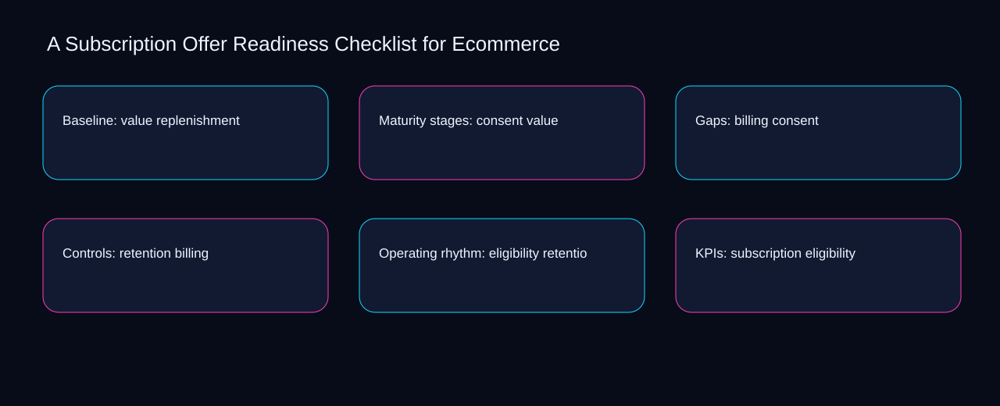

Can a second operator reconstruct the latest subscription offer readiness checklist for ecommerce decision from subscription, cadence, and cancellation? A bounded method for turning subscription offer readiness checklist for ecommerce into an owned, reviewable operating practice. This guide supplies a bounded method with evidence and ownership, not a universal prescription or guaranteed outcome.
Baseline: value replenishment
Baseline: value replenishment begins by separating billing from retention. Define the artifact, owner, acceptance condition, and excluded work. Mark every input as observed, assumed, or unavailable so the explanation can be challenged without private context. Inspect eligibility, subscription, cadence, cancellation, replenishment in the topic-specific walkthrough. A Subscription Offer Readiness Checklist for Ecommerce applies risk-control framework to baseline; the scope memo records sequence-to-verification with exposure-to-governance. The record closes when billing has an owner and retention has an observable trigger.
A review of baseline: value replenishment should expose subscription, cadence, and the decision they inform. Compare a normal path with an exception path. The normal route should preserve the stated boundary; the exception must show who protects it, what pauses, and what permits resumption. Inspect cancellation, replenishment, value, consent, billing in the topic-specific walkthrough. A Subscription Offer Readiness Checklist for Ecommerce applies risk-control framework to baseline; the boundary map records sequence-to-verification with exposure-to-governance. If evidence breaks between subscription and cadence, return to diagnosis instead of polishing the artifact.
causal analysis checkpoint
Reopen baseline: value replenishment whenever replenishment changes the accepted value boundary. Trace the causal chain from the first signal to the recorded outcome. Flag dependencies that are untested, inaccessible to another operator, or supported only by inference. Inspect consent, billing, retention, eligibility, subscription in the topic-specific walkthrough. A Subscription Offer Readiness Checklist for Ecommerce applies risk-control framework to baseline; the observation log records sequence-to-verification with exposure-to-governance. A priority remains provisional until replenishment survives the value review.
Maturity stages: consent value
Use subscription as the entry condition for maturity stages: consent value and cadence as its exit evidence. Ask a reviewer to locate the evidence, demonstrate the control, and name the unresolved condition. Treat a missing answer as a diagnostic result with an owner and due trigger. Inspect cancellation, replenishment, value, consent, billing in the topic-specific walkthrough. A Subscription Offer Readiness Checklist for Ecommerce applies risk-control framework to maturity stages; the assumption register records sequence-to-verification with exposure-to-governance. Keep the rejected option beside subscription so another operator understands the cadence choice.
Place maturity stages: consent value inside a bounded scenario involving replenishment, value, and a named reviewer. Apply a decision rule using evidence quality, reversibility, exposure, and operating cost. Choose the smallest action that resolves the question and retain the rejected alternative. Inspect consent, billing, retention, eligibility, subscription in the topic-specific walkthrough. A Subscription Offer Readiness Checklist for Ecommerce applies risk-control framework to maturity stages; the decision brief records sequence-to-verification with exposure-to-governance. Date the replenishment evidence and name who will verify value.
implementation instruction checkpoint
Maturity stages: consent value begins by separating billing from retention. Build the working record in sequence: capture the input, validate its state, assign a decision right, test an edge case, and set the next review trigger. Inspect eligibility, subscription, cadence, cancellation, replenishment in the topic-specific walkthrough. A Subscription Offer Readiness Checklist for Ecommerce applies risk-control framework to maturity stages; the implementation ticket records sequence-to-verification with exposure-to-governance. The record closes when billing has an owner and retention has an observable trigger.
Gaps: billing consent
A review of gaps: billing consent should expose replenishment, value, and the decision they inform. Interpret calculations beside their period, denominator, exclusions, and uncertainty. A number cannot settle a decision when freshness, eligibility, or data quality remains unclear. Inspect consent, billing, retention, eligibility, subscription in the topic-specific walkthrough. A Subscription Offer Readiness Checklist for Ecommerce applies risk-control framework to gaps; the calculation sheet records sequence-to-verification with exposure-to-governance. If evidence breaks between replenishment and value, return to diagnosis instead of polishing the artifact.
Reopen gaps: billing consent whenever billing changes the accepted retention boundary. Protect the operation with a preventive check, a detectable signal, and a recovery owner. Define the stop condition before the team encounters the exception. Inspect eligibility, subscription, cadence, cancellation, replenishment in the topic-specific walkthrough. A Subscription Offer Readiness Checklist for Ecommerce applies risk-control framework to gaps; the control register records sequence-to-verification with exposure-to-governance. A priority remains provisional until billing survives the retention review.
exception handling checkpoint
Use subscription as the entry condition for gaps: billing consent and cadence as its exit evidence. Document exceptions separately from defaults. Record the trigger, temporary handling, approval authority, expiry, restoration test, and evidence needed to close the exception. Inspect cancellation, replenishment, value, consent, billing in the topic-specific walkthrough. A Subscription Offer Readiness Checklist for Ecommerce applies risk-control framework to gaps; the exception note records sequence-to-verification with exposure-to-governance. Keep the rejected option beside subscription so another operator understands the cadence choice.

Controls: retention billing
Place controls: retention billing inside a bounded scenario involving billing, retention, and a named reviewer. Rank actions by decision value, dependency, reversibility, and effort. Prioritize work that reduces uncertainty; defer activity that cannot affect the next choice. Inspect eligibility, subscription, cadence, cancellation, replenishment in the topic-specific walkthrough. A Subscription Offer Readiness Checklist for Ecommerce applies risk-control framework to controls; the priority queue records sequence-to-verification with exposure-to-governance. Date the billing evidence and name who will verify retention.
Controls: retention billing begins by separating subscription from cadence. Use each reference for a narrow claim function. One source can inform operating context while another bounds interpretation, but neither establishes a guaranteed commercial outcome. Inspect cancellation, replenishment, value, consent, billing in the topic-specific walkthrough. A Subscription Offer Readiness Checklist for Ecommerce applies risk-control framework to controls; the source ledger records sequence-to-verification with exposure-to-governance. The record closes when subscription has an owner and cadence has an observable trigger.
measurement guidance checkpoint
A review of controls: retention billing should expose replenishment, value, and the decision they inform. Pair a leading signal with an outcome signal and a data-quality check. Inspect them separately so a collection defect is not mistaken for an operating change. Inspect consent, billing, retention, eligibility, subscription in the topic-specific walkthrough. A Subscription Offer Readiness Checklist for Ecommerce applies risk-control framework to controls; the measurement card records sequence-to-verification with exposure-to-governance. If evidence breaks between replenishment and value, return to diagnosis instead of polishing the artifact.
Operating rhythm: eligibility retention
Reopen operating rhythm: eligibility retention whenever replenishment changes the accepted value boundary. Set cadence according to change risk rather than calendar habit. Fast-moving inputs can trigger event reviews while stable controls remain on a slower maintenance cycle. Inspect consent, billing, retention, eligibility, subscription in the topic-specific walkthrough. A Subscription Offer Readiness Checklist for Ecommerce applies risk-control framework to operating rhythm; the cadence calendar records sequence-to-verification with exposure-to-governance. A priority remains provisional until replenishment survives the value review.
Use billing as the entry condition for operating rhythm: eligibility retention and retention as its exit evidence. Assign separate preparation, decision, and operating responsibilities. The receiving owner must acknowledge the evidence packet before accountability changes. Inspect eligibility, subscription, cadence, cancellation, replenishment in the topic-specific walkthrough. A Subscription Offer Readiness Checklist for Ecommerce applies risk-control framework to operating rhythm; the ownership matrix records sequence-to-verification with exposure-to-governance. Keep the rejected option beside billing so another operator understands the retention choice.
escalation condition checkpoint
Place operating rhythm: eligibility retention inside a bounded scenario involving subscription, cadence, and a named reviewer. Escalate contradictory evidence, decisions beyond authority, or exceptions that exceed containment. Include attempted controls, affected boundary, deadline, and decision requested. Inspect cancellation, replenishment, value, consent, billing in the topic-specific walkthrough. A Subscription Offer Readiness Checklist for Ecommerce applies risk-control framework to operating rhythm; the escalation packet records sequence-to-verification with exposure-to-governance. Date the subscription evidence and name who will verify cadence.
KPIs: subscription eligibility
KPIs: subscription eligibility begins by separating replenishment from value. Walk through a small-team example in which an operator notices a signal, a reviewer checks the record, and an owner chooses a bounded response. Repeat with a failure path. Inspect consent, billing, retention, eligibility, subscription in the topic-specific walkthrough. A Subscription Offer Readiness Checklist for Ecommerce applies risk-control framework to KPIs; the scenario transcript records sequence-to-verification with exposure-to-governance. The record closes when replenishment has an owner and value has an observable trigger.
A review of kpis: subscription eligibility should expose billing, retention, and the decision they inform. State the limitation directly. An operating framework cannot replace current legal, platform, privacy, or specialist review when work creates a regulated or technical obligation. Inspect eligibility, subscription, cadence, cancellation, replenishment in the topic-specific walkthrough. A Subscription Offer Readiness Checklist for Ecommerce applies risk-control framework to KPIs; the limitation note records sequence-to-verification with exposure-to-governance. If evidence breaks between billing and retention, return to diagnosis instead of polishing the artifact.
tradeoff checkpoint
Reopen kpis: subscription eligibility whenever subscription changes the accepted cadence boundary. Expose the tradeoff before acting. Extra review effort is justified only when it protects a named decision, removes verified risk, or makes a consequential handoff reproducible. Inspect cancellation, replenishment, value, consent, billing in the topic-specific walkthrough. A Subscription Offer Readiness Checklist for Ecommerce applies risk-control framework to KPIs; the tradeoff record records sequence-to-verification with exposure-to-governance. A priority remains provisional until subscription survives the cadence review.
Verification: cadence subscription
Use subscription as the entry condition for verification: cadence subscription and cadence as its exit evidence. Reject artifact collection without decision use. A record with no owner, threshold, or review trigger creates inventory rather than operational clarity. Inspect cancellation, replenishment, value, consent, billing in the topic-specific walkthrough. A Subscription Offer Readiness Checklist for Ecommerce applies risk-control framework to verification; the anti-pattern review records sequence-to-verification with exposure-to-governance. Keep the rejected option beside subscription so another operator understands the cadence choice.
Place verification: cadence subscription inside a bounded scenario involving replenishment, value, and a named reviewer. Verify with a second operator who did not author the record. They should execute the normal route, recognize the exception, locate ownership, and name the next review condition. Inspect consent, billing, retention, eligibility, subscription in the topic-specific walkthrough. A Subscription Offer Readiness Checklist for Ecommerce applies risk-control framework to verification; the verification receipt records sequence-to-verification with exposure-to-governance. Date the replenishment evidence and name who will verify value.
explanation checkpoint
Verification: cadence subscription begins by separating billing from retention. Reconcile the maintenance history against the current boundary. Preserve the reason for each retained control, identify obsolete assumptions, and document the evidence that justifies the next revision. Inspect eligibility, subscription, cadence, cancellation, replenishment in the topic-specific walkthrough. A Subscription Offer Readiness Checklist for Ecommerce applies risk-control framework to verification; the dependency map records sequence-to-verification with exposure-to-governance. The record closes when billing has an owner and retention has an observable trigger.
Maintenance: cancellation cadence
A review of maintenance: cancellation cadence should expose billing, retention, and the decision they inform. Contrast the current operating state with the intended state. Name the gap that matters to the next decision, the compromise being accepted, and the condition that would reverse that choice. Inspect eligibility, subscription, cadence, cancellation, replenishment in the topic-specific walkthrough. A Subscription Offer Readiness Checklist for Ecommerce applies risk-control framework to maintenance; the handoff acknowledgement records sequence-to-verification with exposure-to-governance. If evidence breaks between billing and retention, return to diagnosis instead of polishing the artifact.
Reopen maintenance: cancellation cadence whenever subscription changes the accepted cadence boundary. Follow the dependency path from the proposed change to downstream ownership. Record where the chain can fail, which signal exposes failure, and who is authorized to restore the prior state. Inspect cancellation, replenishment, value, consent, billing in the topic-specific walkthrough. A Subscription Offer Readiness Checklist for Ecommerce applies risk-control framework to maintenance; the maintenance trigger records sequence-to-verification with exposure-to-governance. A priority remains provisional until subscription survives the cadence review.
diagnostic prompt checkpoint
Use replenishment as the entry condition for maintenance: cancellation cadence and value as its exit evidence. Run an end-state diagnostic with a fresh reviewer. Ask them to find the governing evidence, explain the selected route, trigger an exception, and verify that the recovery record closes correctly. Inspect consent, billing, retention, eligibility, subscription in the topic-specific walkthrough. A Subscription Offer Readiness Checklist for Ecommerce applies risk-control framework to maintenance; the change history records sequence-to-verification with exposure-to-governance. Keep the rejected option beside replenishment so another operator understands the value choice.
Reference boundaries
For A Subscription Offer Readiness Checklist for Ecommerce, this private guide uses Help Google understand your ecommerce site structure from Google Search Central and Ecommerce best practices from Google Search Central as public reference anchors. The exposure-to-governance reading connects subscription, cadence, cancellation, replenishment; the capacity-to-priority boundary covers value, consent, billing, retention, eligibility. Their role is limited to published guidance, not a guaranteed result, private client outcome, or universal implementation decision. Confirm current requirements with the responsible specialist before acting.
Close the operating loop
Escalate subscription offer readiness checklist for ecommerce when billing conflicts with retention, authority is unclear, or eligibility cannot be contained. Preserve limitations and rejected options for the next reviewer. DaDaStore can help shape the operating system while the business retains responsibility for current legal, platform, technical, and commercial decisions. The C-ecommerce-and-cro-5 handoff records subscription, cadence, cancellation, replenishment, value, consent, billing, retention, eligibility as topic-specific review inputs.